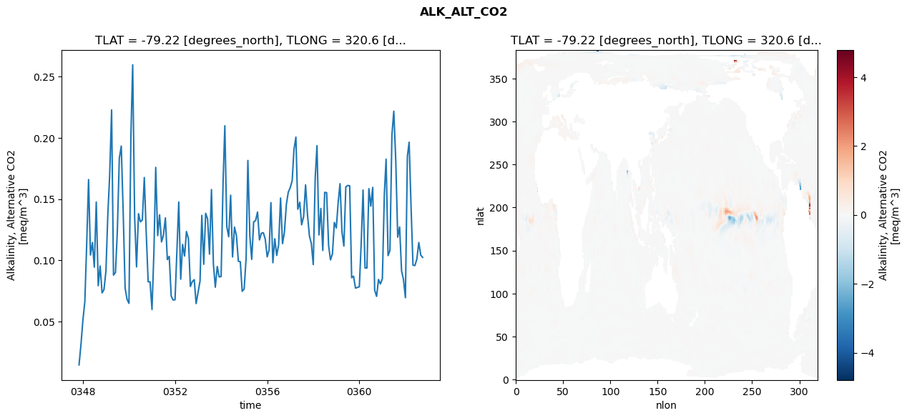
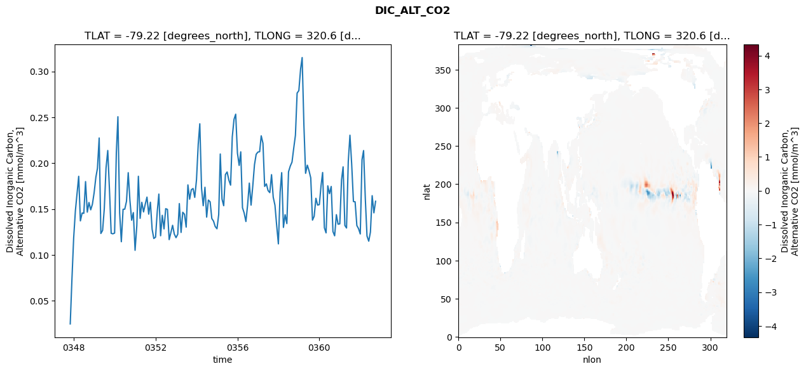
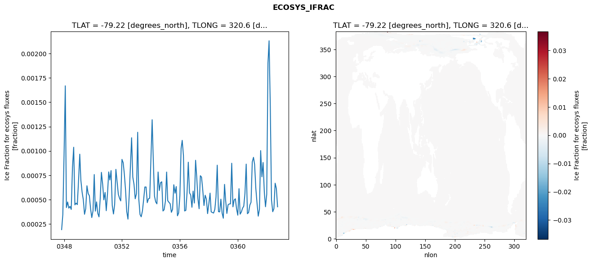
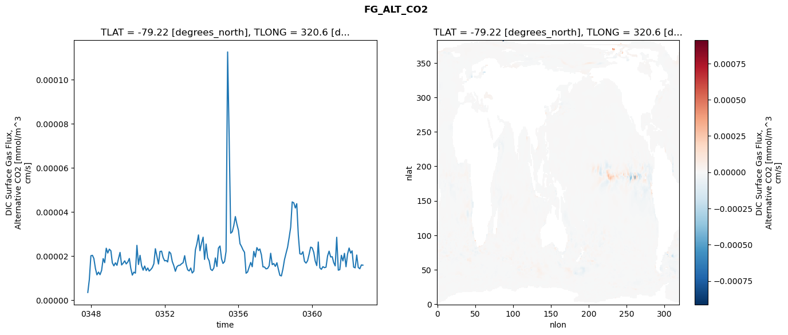

glb-dor_North_Atlantic_basin_018_1999-10-01_00075#
Simulation details#
Case: smyle.cdr-atlas-v0.glb-dor_North_Atlantic_basin_018_1999-10-01_00075.001
Basin: North_Atlantic_basin
Polygon: 18.0
Start date: 1999-10
Show code cell source Hide code cell source
import xarray as xr
import matplotlib.pyplot as plt
Show code cell source Hide code cell source
zarr_store = "/path/to/zarr/store"
# Parameters
zarr_store = "/global/cfs/projectdirs/m4746/Projects/Ocean-CDR-Atlas-v0/data/validation/smyle.cdr-atlas-v0.glb-dor_North_Atlantic_basin_018_1999-10-01_00075.001.validation.zarr"
Show code cell source Hide code cell source
%%time
ds_o = xr.open_zarr(zarr_store).compute()
ds_o
CPU times: user 636 ms, sys: 507 ms, total: 1.14 s
Wall time: 1.34 s
<xarray.Dataset> Size: 2MB
Dimensions: (nlat: 384, nlon: 320, time: 180)
Coordinates:
TLAT float64 8B -79.22
TLONG float64 8B 320.6
ULAT float64 8B -78.95
ULONG float64 8B 321.1
* time (time) object 1kB 0347-11-01 00:00:00 ... 0362-10-01 0...
z_t float32 4B 500.0
Dimensions without coordinates: nlat, nlon
Data variables:
ALK_ALT_CO2_diff (nlat, nlon) float32 492kB nan nan nan ... nan nan nan
ALK_ALT_CO2_rmse (time) float64 1kB 0.0146 0.03097 ... 0.1043 0.1024
DIC_ALT_CO2_diff (nlat, nlon) float32 492kB nan nan nan ... nan nan nan
DIC_ALT_CO2_rmse (time) float64 1kB 0.02487 0.07312 ... 0.1459 0.1585
ECOSYS_IFRAC_diff (nlat, nlon) float32 492kB nan nan nan ... nan nan nan
ECOSYS_IFRAC_rmse (time) float64 1kB 0.0001915 0.0003472 ... 0.0004257
FG_ALT_CO2_diff (nlat, nlon) float32 492kB nan nan nan ... nan nan nan
FG_ALT_CO2_rmse (time) float64 1kB 3.545e-06 9.356e-06 ... 1.591e-05xarray.Dataset
- nlat: 384
- nlon: 320
- time: 180
- TLAT()float64-79.22
- long_name :
- array of t-grid latitudes
- units :
- degrees_north
array(-79.22052261)
- TLONG()float64320.6
- long_name :
- array of t-grid longitudes
- units :
- degrees_east
array(320.56250892)
- ULAT()float64-78.95
- long_name :
- array of u-grid latitudes
- units :
- degrees_north
array(-78.95289509)
- ULONG()float64321.1
- long_name :
- array of u-grid longitudes
- units :
- degrees_east
array(321.12500894)
- time(time)object0347-11-01 00:00:00 ... 0362-10-...
- bounds :
- time_bound
- long_name :
- time
array([cftime.DatetimeNoLeap(347, 11, 1, 0, 0, 0, 0, has_year_zero=True), cftime.DatetimeNoLeap(347, 12, 1, 0, 0, 0, 0, has_year_zero=True), cftime.DatetimeNoLeap(348, 1, 1, 0, 0, 0, 0, has_year_zero=True), cftime.DatetimeNoLeap(348, 2, 1, 0, 0, 0, 0, has_year_zero=True), cftime.DatetimeNoLeap(348, 3, 1, 0, 0, 0, 0, has_year_zero=True), cftime.DatetimeNoLeap(348, 4, 1, 0, 0, 0, 0, has_year_zero=True), cftime.DatetimeNoLeap(348, 5, 1, 0, 0, 0, 0, has_year_zero=True), cftime.DatetimeNoLeap(348, 6, 1, 0, 0, 0, 0, has_year_zero=True), cftime.DatetimeNoLeap(348, 7, 1, 0, 0, 0, 0, has_year_zero=True), cftime.DatetimeNoLeap(348, 8, 1, 0, 0, 0, 0, has_year_zero=True), cftime.DatetimeNoLeap(348, 9, 1, 0, 0, 0, 0, has_year_zero=True), cftime.DatetimeNoLeap(348, 10, 1, 0, 0, 0, 0, has_year_zero=True), cftime.DatetimeNoLeap(348, 11, 1, 0, 0, 0, 0, has_year_zero=True), cftime.DatetimeNoLeap(348, 12, 1, 0, 0, 0, 0, has_year_zero=True), cftime.DatetimeNoLeap(349, 1, 1, 0, 0, 0, 0, has_year_zero=True), cftime.DatetimeNoLeap(349, 2, 1, 0, 0, 0, 0, has_year_zero=True), cftime.DatetimeNoLeap(349, 3, 1, 0, 0, 0, 0, has_year_zero=True), cftime.DatetimeNoLeap(349, 4, 1, 0, 0, 0, 0, has_year_zero=True), cftime.DatetimeNoLeap(349, 5, 1, 0, 0, 0, 0, has_year_zero=True), cftime.DatetimeNoLeap(349, 6, 1, 0, 0, 0, 0, has_year_zero=True), cftime.DatetimeNoLeap(349, 7, 1, 0, 0, 0, 0, has_year_zero=True), cftime.DatetimeNoLeap(349, 8, 1, 0, 0, 0, 0, has_year_zero=True), cftime.DatetimeNoLeap(349, 9, 1, 0, 0, 0, 0, has_year_zero=True), cftime.DatetimeNoLeap(349, 10, 1, 0, 0, 0, 0, has_year_zero=True), cftime.DatetimeNoLeap(349, 11, 1, 0, 0, 0, 0, has_year_zero=True), cftime.DatetimeNoLeap(349, 12, 1, 0, 0, 0, 0, has_year_zero=True), cftime.DatetimeNoLeap(350, 1, 1, 0, 0, 0, 0, has_year_zero=True), cftime.DatetimeNoLeap(350, 2, 1, 0, 0, 0, 0, has_year_zero=True), cftime.DatetimeNoLeap(350, 3, 1, 0, 0, 0, 0, has_year_zero=True), cftime.DatetimeNoLeap(350, 4, 1, 0, 0, 0, 0, has_year_zero=True), cftime.DatetimeNoLeap(350, 5, 1, 0, 0, 0, 0, has_year_zero=True), cftime.DatetimeNoLeap(350, 6, 1, 0, 0, 0, 0, has_year_zero=True), cftime.DatetimeNoLeap(350, 7, 1, 0, 0, 0, 0, has_year_zero=True), cftime.DatetimeNoLeap(350, 8, 1, 0, 0, 0, 0, has_year_zero=True), cftime.DatetimeNoLeap(350, 9, 1, 0, 0, 0, 0, has_year_zero=True), cftime.DatetimeNoLeap(350, 10, 1, 0, 0, 0, 0, has_year_zero=True), cftime.DatetimeNoLeap(350, 11, 1, 0, 0, 0, 0, has_year_zero=True), cftime.DatetimeNoLeap(350, 12, 1, 0, 0, 0, 0, has_year_zero=True), cftime.DatetimeNoLeap(351, 1, 1, 0, 0, 0, 0, has_year_zero=True), cftime.DatetimeNoLeap(351, 2, 1, 0, 0, 0, 0, has_year_zero=True), cftime.DatetimeNoLeap(351, 3, 1, 0, 0, 0, 0, has_year_zero=True), cftime.DatetimeNoLeap(351, 4, 1, 0, 0, 0, 0, has_year_zero=True), cftime.DatetimeNoLeap(351, 5, 1, 0, 0, 0, 0, has_year_zero=True), cftime.DatetimeNoLeap(351, 6, 1, 0, 0, 0, 0, has_year_zero=True), cftime.DatetimeNoLeap(351, 7, 1, 0, 0, 0, 0, has_year_zero=True), cftime.DatetimeNoLeap(351, 8, 1, 0, 0, 0, 0, has_year_zero=True), cftime.DatetimeNoLeap(351, 9, 1, 0, 0, 0, 0, has_year_zero=True), cftime.DatetimeNoLeap(351, 10, 1, 0, 0, 0, 0, has_year_zero=True), cftime.DatetimeNoLeap(351, 11, 1, 0, 0, 0, 0, has_year_zero=True), cftime.DatetimeNoLeap(351, 12, 1, 0, 0, 0, 0, has_year_zero=True), cftime.DatetimeNoLeap(352, 1, 1, 0, 0, 0, 0, has_year_zero=True), cftime.DatetimeNoLeap(352, 2, 1, 0, 0, 0, 0, has_year_zero=True), cftime.DatetimeNoLeap(352, 3, 1, 0, 0, 0, 0, has_year_zero=True), cftime.DatetimeNoLeap(352, 4, 1, 0, 0, 0, 0, has_year_zero=True), cftime.DatetimeNoLeap(352, 5, 1, 0, 0, 0, 0, has_year_zero=True), cftime.DatetimeNoLeap(352, 6, 1, 0, 0, 0, 0, has_year_zero=True), cftime.DatetimeNoLeap(352, 7, 1, 0, 0, 0, 0, has_year_zero=True), cftime.DatetimeNoLeap(352, 8, 1, 0, 0, 0, 0, has_year_zero=True), cftime.DatetimeNoLeap(352, 9, 1, 0, 0, 0, 0, has_year_zero=True), cftime.DatetimeNoLeap(352, 10, 1, 0, 0, 0, 0, has_year_zero=True), cftime.DatetimeNoLeap(352, 11, 1, 0, 0, 0, 0, has_year_zero=True), cftime.DatetimeNoLeap(352, 12, 1, 0, 0, 0, 0, has_year_zero=True), cftime.DatetimeNoLeap(353, 1, 1, 0, 0, 0, 0, has_year_zero=True), cftime.DatetimeNoLeap(353, 2, 1, 0, 0, 0, 0, has_year_zero=True), cftime.DatetimeNoLeap(353, 3, 1, 0, 0, 0, 0, has_year_zero=True), cftime.DatetimeNoLeap(353, 4, 1, 0, 0, 0, 0, has_year_zero=True), cftime.DatetimeNoLeap(353, 5, 1, 0, 0, 0, 0, has_year_zero=True), cftime.DatetimeNoLeap(353, 6, 1, 0, 0, 0, 0, has_year_zero=True), cftime.DatetimeNoLeap(353, 7, 1, 0, 0, 0, 0, has_year_zero=True), cftime.DatetimeNoLeap(353, 8, 1, 0, 0, 0, 0, has_year_zero=True), cftime.DatetimeNoLeap(353, 9, 1, 0, 0, 0, 0, has_year_zero=True), cftime.DatetimeNoLeap(353, 10, 1, 0, 0, 0, 0, has_year_zero=True), cftime.DatetimeNoLeap(353, 11, 1, 0, 0, 0, 0, has_year_zero=True), cftime.DatetimeNoLeap(353, 12, 1, 0, 0, 0, 0, has_year_zero=True), cftime.DatetimeNoLeap(354, 1, 1, 0, 0, 0, 0, has_year_zero=True), cftime.DatetimeNoLeap(354, 2, 1, 0, 0, 0, 0, has_year_zero=True), cftime.DatetimeNoLeap(354, 3, 1, 0, 0, 0, 0, has_year_zero=True), cftime.DatetimeNoLeap(354, 4, 1, 0, 0, 0, 0, has_year_zero=True), cftime.DatetimeNoLeap(354, 5, 1, 0, 0, 0, 0, has_year_zero=True), cftime.DatetimeNoLeap(354, 6, 1, 0, 0, 0, 0, has_year_zero=True), cftime.DatetimeNoLeap(354, 7, 1, 0, 0, 0, 0, has_year_zero=True), cftime.DatetimeNoLeap(354, 8, 1, 0, 0, 0, 0, has_year_zero=True), cftime.DatetimeNoLeap(354, 9, 1, 0, 0, 0, 0, has_year_zero=True), cftime.DatetimeNoLeap(354, 10, 1, 0, 0, 0, 0, has_year_zero=True), cftime.DatetimeNoLeap(354, 11, 1, 0, 0, 0, 0, has_year_zero=True), cftime.DatetimeNoLeap(354, 12, 1, 0, 0, 0, 0, has_year_zero=True), cftime.DatetimeNoLeap(355, 1, 1, 0, 0, 0, 0, has_year_zero=True), cftime.DatetimeNoLeap(355, 2, 1, 0, 0, 0, 0, has_year_zero=True), cftime.DatetimeNoLeap(355, 3, 1, 0, 0, 0, 0, has_year_zero=True), cftime.DatetimeNoLeap(355, 4, 1, 0, 0, 0, 0, has_year_zero=True), cftime.DatetimeNoLeap(355, 5, 1, 0, 0, 0, 0, has_year_zero=True), cftime.DatetimeNoLeap(355, 6, 1, 0, 0, 0, 0, has_year_zero=True), cftime.DatetimeNoLeap(355, 7, 1, 0, 0, 0, 0, has_year_zero=True), cftime.DatetimeNoLeap(355, 8, 1, 0, 0, 0, 0, has_year_zero=True), cftime.DatetimeNoLeap(355, 9, 1, 0, 0, 0, 0, has_year_zero=True), cftime.DatetimeNoLeap(355, 10, 1, 0, 0, 0, 0, has_year_zero=True), cftime.DatetimeNoLeap(355, 11, 1, 0, 0, 0, 0, has_year_zero=True), cftime.DatetimeNoLeap(355, 12, 1, 0, 0, 0, 0, has_year_zero=True), cftime.DatetimeNoLeap(356, 1, 1, 0, 0, 0, 0, has_year_zero=True), cftime.DatetimeNoLeap(356, 2, 1, 0, 0, 0, 0, has_year_zero=True), cftime.DatetimeNoLeap(356, 3, 1, 0, 0, 0, 0, has_year_zero=True), cftime.DatetimeNoLeap(356, 4, 1, 0, 0, 0, 0, has_year_zero=True), cftime.DatetimeNoLeap(356, 5, 1, 0, 0, 0, 0, has_year_zero=True), cftime.DatetimeNoLeap(356, 6, 1, 0, 0, 0, 0, has_year_zero=True), cftime.DatetimeNoLeap(356, 7, 1, 0, 0, 0, 0, has_year_zero=True), cftime.DatetimeNoLeap(356, 8, 1, 0, 0, 0, 0, has_year_zero=True), cftime.DatetimeNoLeap(356, 9, 1, 0, 0, 0, 0, has_year_zero=True), cftime.DatetimeNoLeap(356, 10, 1, 0, 0, 0, 0, has_year_zero=True), cftime.DatetimeNoLeap(356, 11, 1, 0, 0, 0, 0, has_year_zero=True), cftime.DatetimeNoLeap(356, 12, 1, 0, 0, 0, 0, has_year_zero=True), cftime.DatetimeNoLeap(357, 1, 1, 0, 0, 0, 0, has_year_zero=True), cftime.DatetimeNoLeap(357, 2, 1, 0, 0, 0, 0, has_year_zero=True), cftime.DatetimeNoLeap(357, 3, 1, 0, 0, 0, 0, has_year_zero=True), cftime.DatetimeNoLeap(357, 4, 1, 0, 0, 0, 0, has_year_zero=True), cftime.DatetimeNoLeap(357, 5, 1, 0, 0, 0, 0, has_year_zero=True), cftime.DatetimeNoLeap(357, 6, 1, 0, 0, 0, 0, has_year_zero=True), cftime.DatetimeNoLeap(357, 7, 1, 0, 0, 0, 0, has_year_zero=True), cftime.DatetimeNoLeap(357, 8, 1, 0, 0, 0, 0, has_year_zero=True), cftime.DatetimeNoLeap(357, 9, 1, 0, 0, 0, 0, has_year_zero=True), cftime.DatetimeNoLeap(357, 10, 1, 0, 0, 0, 0, has_year_zero=True), cftime.DatetimeNoLeap(357, 11, 1, 0, 0, 0, 0, has_year_zero=True), cftime.DatetimeNoLeap(357, 12, 1, 0, 0, 0, 0, has_year_zero=True), cftime.DatetimeNoLeap(358, 1, 1, 0, 0, 0, 0, has_year_zero=True), cftime.DatetimeNoLeap(358, 2, 1, 0, 0, 0, 0, has_year_zero=True), cftime.DatetimeNoLeap(358, 3, 1, 0, 0, 0, 0, has_year_zero=True), cftime.DatetimeNoLeap(358, 4, 1, 0, 0, 0, 0, has_year_zero=True), cftime.DatetimeNoLeap(358, 5, 1, 0, 0, 0, 0, has_year_zero=True), cftime.DatetimeNoLeap(358, 6, 1, 0, 0, 0, 0, has_year_zero=True), cftime.DatetimeNoLeap(358, 7, 1, 0, 0, 0, 0, has_year_zero=True), cftime.DatetimeNoLeap(358, 8, 1, 0, 0, 0, 0, has_year_zero=True), cftime.DatetimeNoLeap(358, 9, 1, 0, 0, 0, 0, has_year_zero=True), cftime.DatetimeNoLeap(358, 10, 1, 0, 0, 0, 0, has_year_zero=True), cftime.DatetimeNoLeap(358, 11, 1, 0, 0, 0, 0, has_year_zero=True), cftime.DatetimeNoLeap(358, 12, 1, 0, 0, 0, 0, has_year_zero=True), cftime.DatetimeNoLeap(359, 1, 1, 0, 0, 0, 0, has_year_zero=True), cftime.DatetimeNoLeap(359, 2, 1, 0, 0, 0, 0, has_year_zero=True), cftime.DatetimeNoLeap(359, 3, 1, 0, 0, 0, 0, has_year_zero=True), cftime.DatetimeNoLeap(359, 4, 1, 0, 0, 0, 0, has_year_zero=True), cftime.DatetimeNoLeap(359, 5, 1, 0, 0, 0, 0, has_year_zero=True), cftime.DatetimeNoLeap(359, 6, 1, 0, 0, 0, 0, has_year_zero=True), cftime.DatetimeNoLeap(359, 7, 1, 0, 0, 0, 0, has_year_zero=True), cftime.DatetimeNoLeap(359, 8, 1, 0, 0, 0, 0, has_year_zero=True), cftime.DatetimeNoLeap(359, 9, 1, 0, 0, 0, 0, has_year_zero=True), cftime.DatetimeNoLeap(359, 10, 1, 0, 0, 0, 0, has_year_zero=True), cftime.DatetimeNoLeap(359, 11, 1, 0, 0, 0, 0, has_year_zero=True), cftime.DatetimeNoLeap(359, 12, 1, 0, 0, 0, 0, has_year_zero=True), cftime.DatetimeNoLeap(360, 1, 1, 0, 0, 0, 0, has_year_zero=True), cftime.DatetimeNoLeap(360, 2, 1, 0, 0, 0, 0, has_year_zero=True), cftime.DatetimeNoLeap(360, 3, 1, 0, 0, 0, 0, has_year_zero=True), cftime.DatetimeNoLeap(360, 4, 1, 0, 0, 0, 0, has_year_zero=True), cftime.DatetimeNoLeap(360, 5, 1, 0, 0, 0, 0, has_year_zero=True), cftime.DatetimeNoLeap(360, 6, 1, 0, 0, 0, 0, has_year_zero=True), cftime.DatetimeNoLeap(360, 7, 1, 0, 0, 0, 0, has_year_zero=True), cftime.DatetimeNoLeap(360, 8, 1, 0, 0, 0, 0, has_year_zero=True), cftime.DatetimeNoLeap(360, 9, 1, 0, 0, 0, 0, has_year_zero=True), cftime.DatetimeNoLeap(360, 10, 1, 0, 0, 0, 0, has_year_zero=True), cftime.DatetimeNoLeap(360, 11, 1, 0, 0, 0, 0, has_year_zero=True), cftime.DatetimeNoLeap(360, 12, 1, 0, 0, 0, 0, has_year_zero=True), cftime.DatetimeNoLeap(361, 1, 1, 0, 0, 0, 0, has_year_zero=True), cftime.DatetimeNoLeap(361, 2, 1, 0, 0, 0, 0, has_year_zero=True), cftime.DatetimeNoLeap(361, 3, 1, 0, 0, 0, 0, has_year_zero=True), cftime.DatetimeNoLeap(361, 4, 1, 0, 0, 0, 0, has_year_zero=True), cftime.DatetimeNoLeap(361, 5, 1, 0, 0, 0, 0, has_year_zero=True), cftime.DatetimeNoLeap(361, 6, 1, 0, 0, 0, 0, has_year_zero=True), cftime.DatetimeNoLeap(361, 7, 1, 0, 0, 0, 0, has_year_zero=True), cftime.DatetimeNoLeap(361, 8, 1, 0, 0, 0, 0, has_year_zero=True), cftime.DatetimeNoLeap(361, 9, 1, 0, 0, 0, 0, has_year_zero=True), cftime.DatetimeNoLeap(361, 10, 1, 0, 0, 0, 0, has_year_zero=True), cftime.DatetimeNoLeap(361, 11, 1, 0, 0, 0, 0, has_year_zero=True), cftime.DatetimeNoLeap(361, 12, 1, 0, 0, 0, 0, has_year_zero=True), cftime.DatetimeNoLeap(362, 1, 1, 0, 0, 0, 0, has_year_zero=True), cftime.DatetimeNoLeap(362, 2, 1, 0, 0, 0, 0, has_year_zero=True), cftime.DatetimeNoLeap(362, 3, 1, 0, 0, 0, 0, has_year_zero=True), cftime.DatetimeNoLeap(362, 4, 1, 0, 0, 0, 0, has_year_zero=True), cftime.DatetimeNoLeap(362, 5, 1, 0, 0, 0, 0, has_year_zero=True), cftime.DatetimeNoLeap(362, 6, 1, 0, 0, 0, 0, has_year_zero=True), cftime.DatetimeNoLeap(362, 7, 1, 0, 0, 0, 0, has_year_zero=True), cftime.DatetimeNoLeap(362, 8, 1, 0, 0, 0, 0, has_year_zero=True), cftime.DatetimeNoLeap(362, 9, 1, 0, 0, 0, 0, has_year_zero=True), cftime.DatetimeNoLeap(362, 10, 1, 0, 0, 0, 0, has_year_zero=True)], dtype=object) - z_t()float32500.0
- long_name :
- depth from surface to midpoint of layer
- positive :
- down
- units :
- centimeters
- valid_max :
- 537500.0
- valid_min :
- 500.0
array(500., dtype=float32)
- ALK_ALT_CO2_diff(nlat, nlon)float32nan nan nan nan ... nan nan nan nan
- cell_methods :
- time: mean
- grid_loc :
- 3111
- long_name :
- Alkalinity, Alternative CO2
- units :
- meq/m^3
array([[ nan, nan, nan, ..., nan, nan, nan], [ nan, nan, nan, ..., nan, nan, nan], [ 0.00927734, -0.00610352, 0.0012207 , ..., nan, nan, nan], ..., [ nan, nan, nan, ..., nan, nan, nan], [ nan, nan, nan, ..., nan, nan, nan], [ nan, nan, nan, ..., nan, nan, nan]], dtype=float32) - ALK_ALT_CO2_rmse(time)float640.0146 0.03097 ... 0.1043 0.1024
- cell_methods :
- time: mean
- grid_loc :
- 3111
- long_name :
- Alkalinity, Alternative CO2
- units :
- meq/m^3
array([0.0146035 , 0.0309702 , 0.05097117, 0.06630326, 0.11119656, 0.16593607, 0.10436195, 0.11448554, 0.09444177, 0.14762964, 0.07930454, 0.0953505 , 0.07341095, 0.07607999, 0.09117165, 0.13854132, 0.16886569, 0.22277771, 0.08795012, 0.09006681, 0.12411888, 0.18329068, 0.19328556, 0.14042715, 0.07744452, 0.06827616, 0.06488237, 0.20235509, 0.25962277, 0.13513072, 0.09464023, 0.1381004 , 0.13146925, 0.1329115 , 0.16759888, 0.12315807, 0.08248358, 0.08245542, 0.0598616 , 0.10807958, 0.17589335, 0.1201784 , 0.13711065, 0.11504821, 0.12053591, 0.13466003, 0.10058577, 0.1032165 , 0.07082477, 0.067619 , 0.06781394, 0.10938314, 0.14761047, 0.08461642, 0.11297345, 0.10352922, 0.12355063, 0.11773087, 0.07866129, 0.08257987, 0.08423602, 0.06470914, 0.07377582, 0.08309637, 0.13669201, 0.09681205, 0.13841229, 0.13379546, 0.10508831, 0.15777315, 0.09678902, 0.07807824, 0.09492294, 0.08646461, 0.0867516 , 0.16352748, 0.209855 , 0.12752719, 0.1192831 , 0.15315758, 0.10275984, 0.12712258, 0.12003955, 0.09924559, 0.09889448, 0.07469784, 0.07667085, 0.10177154, 0.18152896, 0.11988019, 0.10079685, 0.13143742, 0.13249578, 0.13943295, 0.11667337, 0.12212062, 0.12255715, 0.11736625, 0.1028356 , 0.10868191, 0.14710771, 0.09804476, 0.1176155 , 0.10403102, 0.1124992 , 0.15084851, 0.11365113, 0.12299794, 0.14573025, 0.15562349, 0.15933209, 0.16508413, 0.19032957, 0.20056563, 0.14175008, 0.14747611, 0.1290211 , 0.13567821, 0.16159846, 0.13762125, 0.1199191 , 0.11385217, 0.09654353, 0.16760395, 0.1936138 , 0.12076051, 0.14236165, 0.10807338, 0.1555034 , 0.15523872, 0.11211234, 0.10036337, 0.10542202, 0.13091898, 0.12642857, 0.14812544, 0.16256949, 0.1231704 , 0.11164045, 0.16003523, 0.16110016, 0.16089298, 0.08580363, 0.08705563, 0.07730624, 0.07783294, 0.07843881, 0.11605413, 0.15737058, 0.09384285, 0.0936791 , 0.15852399, 0.14421484, 0.15955512, 0.07561424, 0.07057972, 0.08436704, 0.08073208, 0.08506116, 0.15367029, 0.18257289, 0.10388711, 0.10814527, 0.20225769, 0.22173071, 0.18152098, 0.11892828, 0.12724065, 0.09141319, 0.08436831, 0.06951578, 0.18486865, 0.19642539, 0.14246092, 0.09600536, 0.09575486, 0.10101382, 0.11453187, 0.10427767, 0.10237628]) - DIC_ALT_CO2_diff(nlat, nlon)float32nan nan nan nan ... nan nan nan nan
- cell_methods :
- time: mean
- grid_loc :
- 3111
- long_name :
- Dissolved Inorganic Carbon, Alternative CO2
- units :
- mmol/m^3
array([[ nan, nan, nan, ..., nan, nan, nan], [ nan, nan, nan, ..., nan, nan, nan], [ 0.00268555, -0.0090332 , -0.00561523, ..., nan, nan, nan], ..., [ nan, nan, nan, ..., nan, nan, nan], [ nan, nan, nan, ..., nan, nan, nan], [ nan, nan, nan, ..., nan, nan, nan]], dtype=float32) - DIC_ALT_CO2_rmse(time)float640.02487 0.07312 ... 0.1459 0.1585
- cell_methods :
- time: mean
- grid_loc :
- 3111
- long_name :
- Dissolved Inorganic Carbon, Alternative CO2
- units :
- mmol/m^3
array([0.02486509, 0.07312414, 0.11839858, 0.14819847, 0.1658076 , 0.18568951, 0.13713425, 0.14572397, 0.14533183, 0.17994994, 0.14666235, 0.15717309, 0.14918172, 0.15521166, 0.16783696, 0.18466554, 0.19434547, 0.22746216, 0.12338732, 0.12673893, 0.15028234, 0.19463424, 0.21384144, 0.17164433, 0.12356415, 0.12302938, 0.12384525, 0.21196849, 0.25062682, 0.14569784, 0.11440748, 0.14975334, 0.14990499, 0.15847496, 0.18964857, 0.15948415, 0.13785937, 0.14613614, 0.1050641 , 0.13193697, 0.18573399, 0.13989071, 0.15734817, 0.14688027, 0.15519112, 0.16301389, 0.14443618, 0.15742943, 0.1280253 , 0.11797295, 0.1193735 , 0.14762045, 0.16633289, 0.12092149, 0.14317848, 0.12837905, 0.15041433, 0.14963983, 0.11672143, 0.12420797, 0.13231026, 0.12282394, 0.11883824, 0.12258648, 0.15597282, 0.12453622, 0.14651234, 0.14429793, 0.13034474, 0.176347 , 0.16077569, 0.17111801, 0.17238488, 0.1627423 , 0.18192113, 0.22068994, 0.24293337, 0.17274139, 0.15366303, 0.17374962, 0.141219 , 0.15980478, 0.15791606, 0.13972025, 0.13677043, 0.13094376, 0.12852193, 0.14395767, 0.21000374, 0.16088384, 0.15367133, 0.18765822, 0.19040745, 0.18156732, 0.17607326, 0.22868885, 0.24777505, 0.2533992 , 0.21104941, 0.19756813, 0.21236783, 0.15146077, 0.14571179, 0.1364382 , 0.15418827, 0.17828627, 0.15428239, 0.17478336, 0.19834638, 0.20967342, 0.21212369, 0.21251839, 0.22980717, 0.22171989, 0.17470289, 0.17740763, 0.17016635, 0.16792022, 0.18749688, 0.16296739, 0.15415322, 0.13252756, 0.11205696, 0.16833671, 0.18968518, 0.13001245, 0.14385021, 0.13418345, 0.19064241, 0.1968219 , 0.20120323, 0.21608318, 0.23046613, 0.27639294, 0.27911249, 0.30255656, 0.3151349 , 0.24141141, 0.18895364, 0.19783601, 0.19182528, 0.18399525, 0.13795469, 0.14209809, 0.16173717, 0.15432194, 0.15486536, 0.17560574, 0.18983959, 0.1296708 , 0.12404062, 0.17530166, 0.16679587, 0.17461441, 0.12547231, 0.12086641, 0.14389199, 0.13349386, 0.13388988, 0.18180407, 0.19599077, 0.13218936, 0.1293549 , 0.20173932, 0.23047984, 0.19891497, 0.15820918, 0.15789133, 0.13206835, 0.12867833, 0.12287865, 0.20384154, 0.21374116, 0.16107516, 0.12063069, 0.11501077, 0.12497112, 0.16460122, 0.14589214, 0.15850057]) - ECOSYS_IFRAC_diff(nlat, nlon)float32nan nan nan nan ... nan nan nan nan
- cell_methods :
- time: mean
- grid_loc :
- 2110
- long_name :
- Ice Fraction for ecosys fluxes
- units :
- fraction
array([[ nan, nan, nan, ..., nan, nan, nan], [ nan, nan, nan, ..., nan, nan, nan], [1.7881393e-07, 6.0796738e-06, 1.3351440e-05, ..., nan, nan, nan], ..., [ nan, nan, nan, ..., nan, nan, nan], [ nan, nan, nan, ..., nan, nan, nan], [ nan, nan, nan, ..., nan, nan, nan]], dtype=float32) - ECOSYS_IFRAC_rmse(time)float640.0001915 0.0003472 ... 0.0004257
- cell_methods :
- time: mean
- grid_loc :
- 2110
- long_name :
- Ice Fraction for ecosys fluxes
- units :
- fraction
array([0.00019152, 0.00034717, 0.00096099, 0.00166872, 0.0004181 , 0.00047554, 0.0004122 , 0.00043028, 0.00039884, 0.00082973, 0.00103771, 0.00044592, 0.00046399, 0.00044836, 0.00069108, 0.00096652, 0.00069808, 0.00057592, 0.00049986, 0.00034917, 0.00040631, 0.00064184, 0.00056197, 0.00053952, 0.00040433, 0.00031537, 0.00038428, 0.00075737, 0.00038124, 0.00047647, 0.00035951, 0.00032232, 0.00050572, 0.00077996, 0.00065804, 0.00049758, 0.00057363, 0.00038589, 0.00055789, 0.00078443, 0.00070141, 0.00079794, 0.00043863, 0.0003521 , 0.00045119, 0.00081069, 0.00068352, 0.00055532, 0.00051292, 0.00048639, 0.00091315, 0.00087835, 0.00076651, 0.00059884, 0.00037889, 0.00029923, 0.00053178, 0.00083778, 0.00113539, 0.00073179, 0.00065485, 0.00050852, 0.00056037, 0.00119167, 0.00050824, 0.00034691, 0.00032315, 0.00038336, 0.00049852, 0.00062943, 0.00062927, 0.00046843, 0.00050907, 0.00051373, 0.00091846, 0.0013205 , 0.00091507, 0.00053569, 0.00047659, 0.00045641, 0.0007834 , 0.00059297, 0.00067393, 0.00068276, 0.00038266, 0.00039639, 0.00048317, 0.00078306, 0.00048881, 0.0004717 , 0.00045775, 0.00036925, 0.00039942, 0.00065232, 0.00056569, 0.00063388, 0.00033321, 0.0003638 , 0.00053995, 0.00102552, 0.00110863, 0.0009534 , 0.0003829 , 0.00038997, 0.00057129, 0.00088424, 0.00056969, 0.00054723, 0.0004211 , 0.00058724, 0.00046438, 0.00090393, 0.0007382 , 0.00050899, 0.00040607, 0.00074512, 0.00073123, 0.00059809, 0.00043899, 0.00054504, 0.00050354, 0.0003558 , 0.00045604, 0.00056638, 0.00037427, 0.00036707, 0.00036164, 0.00039968, 0.00052658, 0.00085343, 0.0003761 , 0.00037344, 0.00050436, 0.00036216, 0.00030849, 0.00065626, 0.00049174, 0.00035776, 0.00044663, 0.00045517, 0.00045616, 0.00087349, 0.00042557, 0.0004956 , 0.00050811, 0.00040523, 0.0003397 , 0.00061192, 0.00035035, 0.0003725 , 0.00041118, 0.00043279, 0.00056407, 0.00086443, 0.00035486, 0.00036777, 0.00044354, 0.00047229, 0.00088663, 0.00093405, 0.00086162, 0.00061294, 0.0004653 , 0.00032977, 0.00040032, 0.0010033 , 0.00073416, 0.00088126, 0.00057604, 0.0004264 , 0.00055437, 0.00190476, 0.00213161, 0.00144537, 0.00049605, 0.00037512, 0.00040723, 0.00066823, 0.00061347, 0.00042567]) - FG_ALT_CO2_diff(nlat, nlon)float32nan nan nan nan ... nan nan nan nan
- cell_methods :
- time: mean
- grid_loc :
- 2110
- long_name :
- DIC Surface Gas Flux, Alternative CO2
- units :
- mmol/m^3 cm/s
array([[ nan, nan, nan, ..., nan, nan, nan], [ nan, nan, nan, ..., nan, nan, nan], [4.6813682e-09, 8.5700833e-09, 2.1747981e-09, ..., nan, nan, nan], ..., [ nan, nan, nan, ..., nan, nan, nan], [ nan, nan, nan, ..., nan, nan, nan], [ nan, nan, nan, ..., nan, nan, nan]], dtype=float32) - FG_ALT_CO2_rmse(time)float643.545e-06 9.356e-06 ... 1.591e-05
- cell_methods :
- time: mean
- grid_loc :
- 2110
- long_name :
- DIC Surface Gas Flux, Alternative CO2
- units :
- mmol/m^3 cm/s
array([3.54525141e-06, 9.35565575e-06, 2.01872207e-05, 2.03646504e-05, 1.89404952e-05, 1.44027366e-05, 1.15259787e-05, 1.27748677e-05, 1.16058061e-05, 1.35184216e-05, 1.88896425e-05, 1.70394016e-05, 2.35968093e-05, 2.14105086e-05, 2.31550801e-05, 2.24149799e-05, 1.70050185e-05, 1.56052261e-05, 1.69696237e-05, 1.58505465e-05, 1.88644196e-05, 2.16938441e-05, 1.60100082e-05, 1.67865535e-05, 1.78740943e-05, 1.64928144e-05, 1.73334849e-05, 1.89401474e-05, 1.45557224e-05, 1.14059981e-05, 1.27540527e-05, 1.23048733e-05, 2.48870182e-05, 1.62223127e-05, 2.03585964e-05, 1.56888230e-05, 1.36399505e-05, 1.55253846e-05, 1.34676365e-05, 1.46313160e-05, 1.32464275e-05, 1.39059948e-05, 1.47965795e-05, 1.65389778e-05, 2.33637384e-05, 1.99292742e-05, 1.64364104e-05, 2.21270666e-05, 2.22572666e-05, 1.93958841e-05, 1.78769081e-05, 1.80365028e-05, 1.73713083e-05, 2.19854211e-05, 2.12105455e-05, 1.75509646e-05, 1.57059908e-05, 1.31402147e-05, 1.52373166e-05, 1.58025250e-05, 1.58893742e-05, 1.65544061e-05, 1.70239319e-05, 2.02143562e-05, 1.63450720e-05, 1.38148892e-05, 1.33018284e-05, 1.46122796e-05, 1.23638363e-05, 1.31926491e-05, 2.28110668e-05, 2.55768003e-05, 2.96186755e-05, 2.24497432e-05, 2.59213203e-05, 2.85797439e-05, 1.85293621e-05, 2.54841076e-05, 1.93377788e-05, 1.78755174e-05, ... 2.44668964e-05, 2.28800266e-05, 2.17507005e-05, 1.22636285e-05, 1.28166687e-05, 1.50597894e-05, 1.71462428e-05, 1.52053297e-05, 2.21584498e-05, 1.96055091e-05, 2.38707421e-05, 2.25597754e-05, 2.32388330e-05, 2.05512344e-05, 1.51567032e-05, 1.50722966e-05, 1.42449910e-05, 1.44382282e-05, 1.56213770e-05, 2.13024281e-05, 1.61671934e-05, 1.66622168e-05, 1.53736594e-05, 1.70032632e-05, 1.41587473e-05, 1.13074909e-05, 1.10369547e-05, 1.42621421e-05, 1.83971514e-05, 2.12978255e-05, 2.40665531e-05, 2.83628574e-05, 3.31088094e-05, 4.45678957e-05, 4.41600046e-05, 4.18200154e-05, 4.37711737e-05, 2.95120379e-05, 2.10841677e-05, 2.08545380e-05, 2.19956196e-05, 1.76536532e-05, 1.68461182e-05, 1.79148638e-05, 2.09008523e-05, 2.40985379e-05, 2.37553874e-05, 2.16752803e-05, 1.78251461e-05, 1.57135841e-05, 2.64172067e-05, 1.47090360e-05, 1.40123888e-05, 1.52473930e-05, 1.47787648e-05, 1.50064769e-05, 2.00794138e-05, 2.22611089e-05, 1.96324531e-05, 1.97625648e-05, 1.71549769e-05, 1.55943931e-05, 2.85486093e-05, 1.36441684e-05, 1.38810070e-05, 2.03914787e-05, 1.78352132e-05, 2.12771567e-05, 1.52040394e-05, 2.09235740e-05, 2.36798202e-05, 2.13953277e-05, 2.24031755e-05, 1.50379254e-05, 1.47021596e-05, 2.05030336e-05, 1.48867151e-05, 1.42881310e-05, 1.60185285e-05, 1.59134901e-05])
- timePandasIndex
PandasIndex(CFTimeIndex([0347-11-01 00:00:00, 0347-12-01 00:00:00, 0348-01-01 00:00:00, 0348-02-01 00:00:00, 0348-03-01 00:00:00, 0348-04-01 00:00:00, 0348-05-01 00:00:00, 0348-06-01 00:00:00, 0348-07-01 00:00:00, 0348-08-01 00:00:00, ... 0362-01-01 00:00:00, 0362-02-01 00:00:00, 0362-03-01 00:00:00, 0362-04-01 00:00:00, 0362-05-01 00:00:00, 0362-06-01 00:00:00, 0362-07-01 00:00:00, 0362-08-01 00:00:00, 0362-09-01 00:00:00, 0362-10-01 00:00:00], dtype='object', length=180, calendar='noleap', freq='MS'))
Show code cell source Hide code cell source
variables = [v[:-5] for v in ds_o.variables if "_rmse" in v]
Show code cell source Hide code cell source
plt.rcParams.update({'figure.max_open_warning': 0})
for v in variables:
fig, axs = plt.subplots(1, 2, figsize=(15, 6))
ds_o[f"{v}_rmse"].plot(ax=axs[0])
ds_o[f"{v}_diff"].plot(ax=axs[1])
plt.suptitle(v, fontweight="bold")



